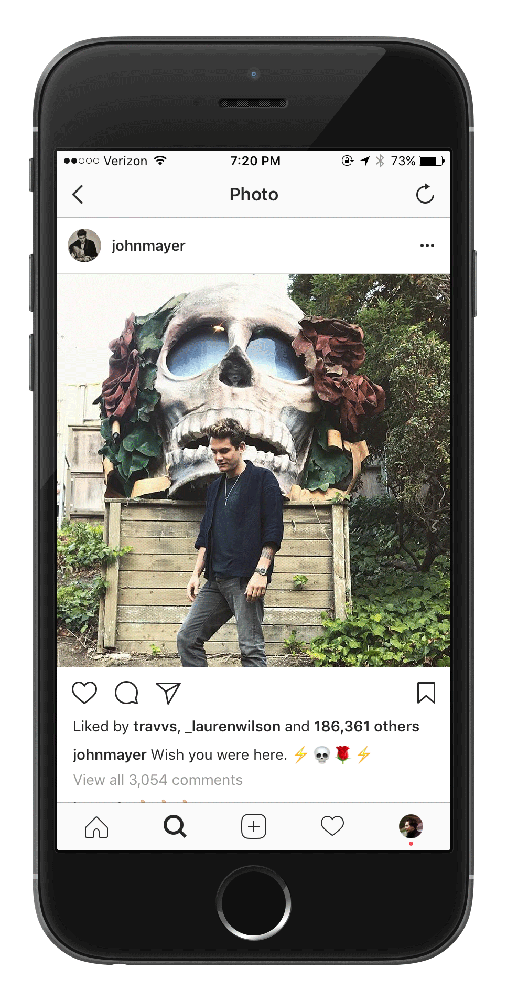

Instagram is full of things you want, but there’s no way for you to immediately purchase, or even identify, the exact product you see.
Solution
Grab, by Instagram automatically identifies exact products that appear in any Instagram photo, allowing you to follow the tag icon link and purchase instantly.
How it Works
Using Samsung’s existing Bixby Vision technology to automatically identify exact products in an image, just press and hold your finger on screen to reveal any products pictured in that photo.
Clicking on a product tag takes you to that exact product available for purchase online. Either purchase the item, shop around the store, or easily return back to your Instagram feed.
Posting a Photo
When posting a photo to Instagram, manually tag any product that appears in your photo, just as you would tag a person.
Celebrities
Mr. Mayer didn’t mention what jeans he’s flaunting in his latest post? Press and hold your finger on the photo to reveal a tag telling you the exact brand and style.

Influencers
Instead of shamelessly promoting a product in the caption, influencers add tags to products that appear in their photo, making them far more bearable to follow.